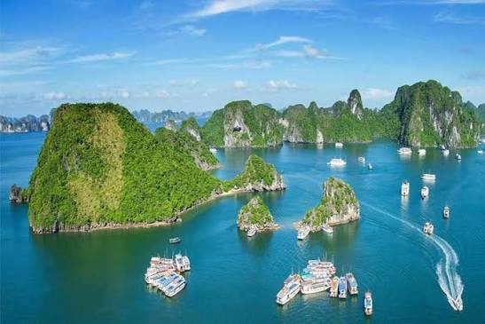
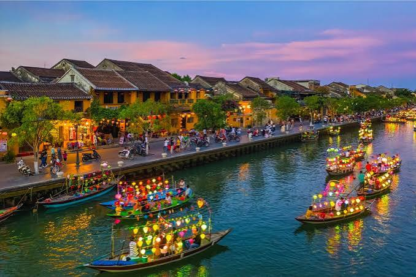
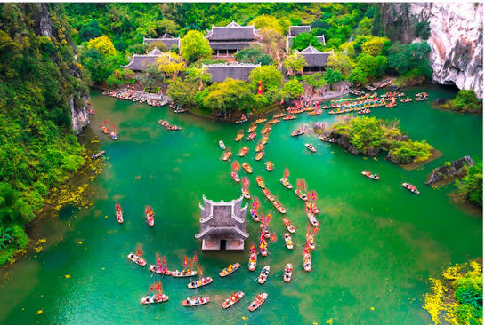
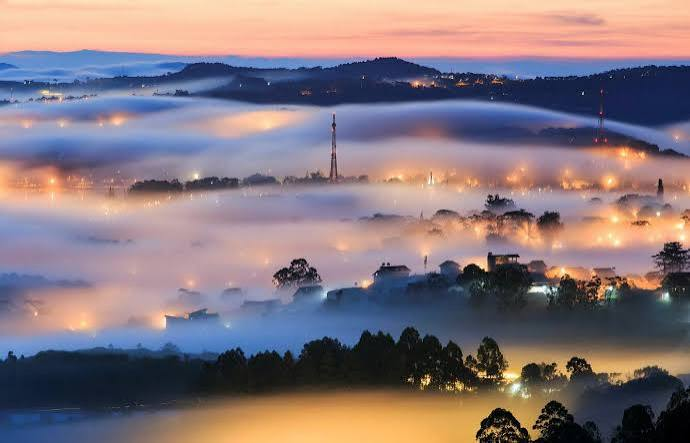
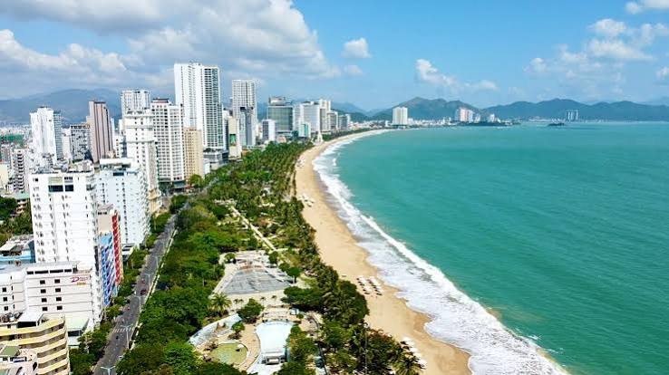

Vịnh Hạ Long
Vịnh Hạ Long nổi tiếng với hàng nghìn đảo đá vôi và cảnh quan thiên nhiên kỳ vĩ.
Đà Nẵng
Đà Nẵng hấp dẫn du khách bởi những cây cầu độc đáo, bãi biển đẹp và nhịp sống hiện đại.

Phố cổ Hội An
Hội An lưu giữ nét kiến trúc cổ kính, những con phố nhỏ và không gian văn hóa đặc sắc.

Tràng An
Tràng An gây ấn tượng với núi đá vôi, hang động và dòng sông trong xanh giữa thiên nhiên.

Đà Lạt
Đà Lạt có khí hậu mát mẻ, rừng thông xanh, vườn hoa và những góc phố yên bình.

Nha Trang
Nha Trang là điểm đến lý tưởng để tắm biển, khám phá các hòn đảo và trải nghiệm thể thao nước.